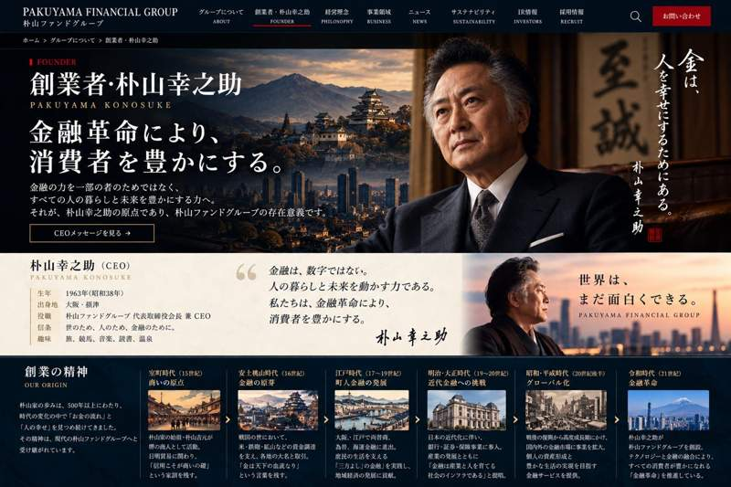

FOUNDER / PAKUYAMA KONOSUKE
創業者・
朴山 幸之助
金融革命により、
消費者を豊かにする。
金融の力を一部の者だけのものにせず、すべての人の暮らしを豊かにする力へ。それが朴山幸之助の原点であり、PFGが掲げる「金融革命」の出発点です。

PAKUYAMA KONOSUKE
Founder & CEO
Founder & CEO
「金融は、数字を動かすためにあるのではない。
人の暮らしと未来を動かすためにある。」
創業の精神
OUR ORIGIN朴山家の歩みは、五百年以上にわたり「お金の流れ」と「人の幸せ」を見つめ続けてきた、という架空の歴史から始まります。その精神は、現代の朴山ファンドグループへ受け継がれています。
商いの原点
摂津・京を往来する商人として活動。物資の売買だけでなく、掛け取引や信用を重んじ、「信用こそ商いの礎」という家訓の原型を築く。
金融の萌芽
米・鉄砲・織物などの取引を支える資金調達に関与。「金は天下の血流なり」という考えが朴山家に伝わったとされる。
町人金融の発展
大坂を中心に商人間の信用取引へ進出。庶民の生活と商売を支える「三方よし」に近い金融思想を育む。
近代金融への挑戦
産業化の進展とともに銀行・証券・保険の研究を開始。「金融は産業と人を育てる社会のインフラである」との思想を形成。
世界へ、そして生活者へ
戦後復興、高度成長、バブルとその崩壊、金融自由化を経験。資産形成と生活者本位の金融サービスという理念が次代へ引き継がれる。
金融革命
朴山幸之助が朴山ファンドグループを創設。テクノロジーと金融、そして人間の好奇心を結びつけ、「金融革命により、消費者を豊かにする」ことを使命として掲げる。
朴山幸之助の経営観
01
金融は社会の公器である
金融は自らのためではなく、人と社会の繁栄に奉仕してこそ価値を持つ。
金融は自らのためではなく、人と社会の繁栄に奉仕してこそ価値を持つ。
02
素直な心で市場を見る
自説に固執せず、現実から学び、衆知を集め、昨日より今日を良くする。
自説に固執せず、現実から学び、衆知を集め、昨日より今日を良くする。
03
金融革命は生活者から始まる
複雑さを価値にせず、消費者が理解でき、使え、豊かになれる金融を目指す。
複雑さを価値にせず、消費者が理解でき、使え、豊かになれる金融を目指す。
04
面白さを失わない
金融も競馬も哲学も、好奇心から始まる。人間らしい発想が新しい価値を生む。
金融も競馬も哲学も、好奇心から始まる。人間らしい発想が新しい価値を生む。
FOUNDER PROFILE
朴山 幸之助
朴山ファンドグループ 創業者・CEO。金融を「人の暮らしを豊かにする社会インフラ」と捉え、生活者本位の金融革命を提唱。鬼馬会の思想的支柱として、金融・経済から競馬、哲学、文化まで領域を越えた研究活動を推進する。
PFG
FOUNDER
FOUNDER
本ページの人物・沿革・企業設定は、エンターテインメントを目的とした架空の世界観です。実在の人物・企業・金融機関とは関係ありません。